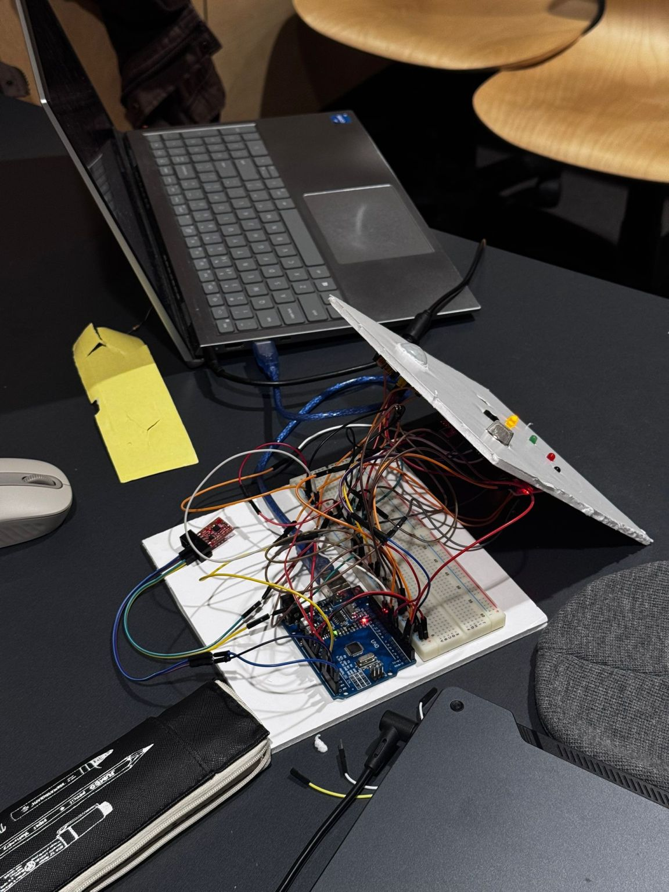

Overview
I just wrapped up an incredible weekend at MakeUofT 2026, my very first hackathon! Tasked with the theme of "D-Day" (Disaster Preparedness), my team and I developed an all-in-one safety hub designed for vulnerable living situations. We wanted to create an accessible, low-cost solution to monitor environmental threats that often go unnoticed until it’s too late.
Huge thanks to my partners Sauhard Srivastava and Hans Jeon for the late-night troubleshooting and to the organizers for a seamless event!
Inspiration
FaceGuard was inspired by disaster and survival scenarios where situational awareness becomes critical for human safety. During emergencies such as fires, building collapses, earthquakes, or hazardous environments, people often lose the ability to quickly assess danger due to stress, low visibility, or environmental chaos.
We wanted to create a compact system that could act as an intelligent companion during high-risk situations — detecting threats, interpreting environmental signals, and alerting users before conditions become life-threatening. Our motivation was to design a tool that could assist individuals in survival situations where every second matters.
What It Does
FaceGuard is a multi-sensor hazard detection system designed for disaster response and survival environments. The device continuously monitors environmental conditions and classifies risk into three levels:
- Green (Safe): Stable conditions
- Yellow (Warning): Human presence
- Red (Critical): Immediate threatening hazard

It actively detects the presence of fire, smoke and gas concentrations, sudden impacts or abnormal motion (seismic activity), environmental noise, and nearby human movement. When danger is detected, FaceGuard provides visual alerts through a multi-stage LED diagnostic system and audible alarm patterns via a high-decibel buzzer.
How We Built It
We built FaceGuard using an Arduino platform combined with multiple environmental sensors to achieve real-time hazard awareness. The system integrates:
- MPU6050 accelerometer for motion, seismic, and impact detection
- Sound sensor for acoustic anomaly detection
- Smoke sensor for hazardous gas detection
- Flame sensor for fire detection
- PIR sensor for nearby human movement

Challenges We Ran Into
Beyond the code, this weekend was a masterclass in rapid prototyping. We encountered several technical difficulties, including:
- Sensor calibration, debugging sensor interference, and noise filtering.
- Designing real-time alert logic using C++ without blocking delays.
- Determining thresholds that balance sensitivity and false alarms.
Accomplishments & What We Learned
Our key accomplishments include executing multi-sensor fusion on a low-cost embedded platform and creating real-time risk classification with prioritized safety logic within a limited 24-hour timeframe.
We learned embedded system integration with multiple sensors, real-time hazard detection logic, and rapid prototyping under intense time pressure. Most importantly, we gained insight into how engineering solutions can directly impact human safety during emergencies.
What's Next for FaceGuard
Future improvements include wireless communication for remote alerts, integration with mobile devices or rescue networks, a battery-powered portable design, a rugged enclosure for harsh environments, and GPS-based emergency location tracking.